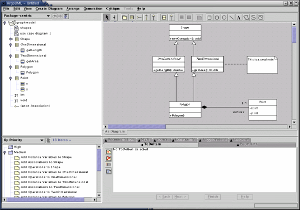

Welcome to ArgoUML
ArgoUML is a modelling tool that helps you do your design using UML. Look at the features that are already implemented in ArgoUML. ArgoUML has been downloaded over 200,000 times! |
User documentation |

|
|
Download: Two Ways to Launch ArgoUML |
|
|
Launch via JavaWebStart: Installation and upgrades are automatic. If you have problems, please see our JWS FAQ. |
Download files: |
Screenshot (click for tour)
|  |
ArgoUML's user interface is divided into 4 panels:
Top left: a hierarchical view of the current project file.
Top right: editor for the selected part of the project, in this case a class diagram.
Bottom left: the designer's "to do" list.
Bottom right: details of the selected object in the diagram or the selected "to do" item.
Supported diagrams:
Learn more on the ArgoUML tour. |
Commercial Extensions
ArgoUML is licensed under the BSD license which also allows extensions to be commercialized.
The company Gentleware offers
such an extension under the name Poseidon for UML.
A Community Edition is offered free of charge.
For Developers of ArgoUML
ArgoUML is not only a free UML modelling tool, it is also an Open Source Development project where you are invited to contribute.Go to the Developer Zone to read about the project and to find the documentation of the internals of ArgoUML.
|
Thanks to RefactorIT for their support. |
|